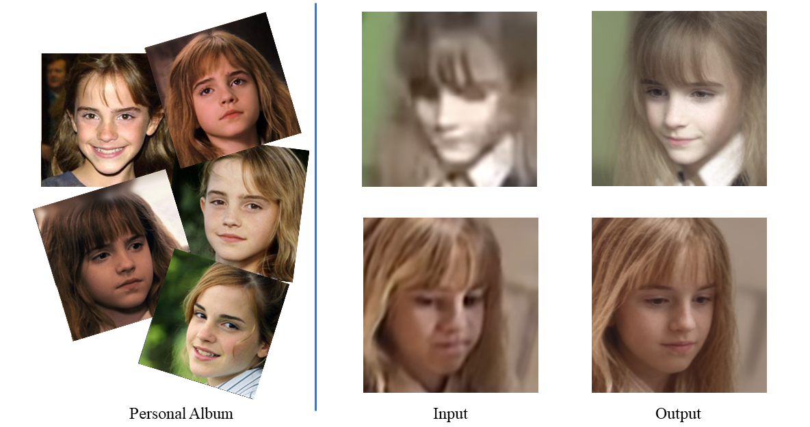
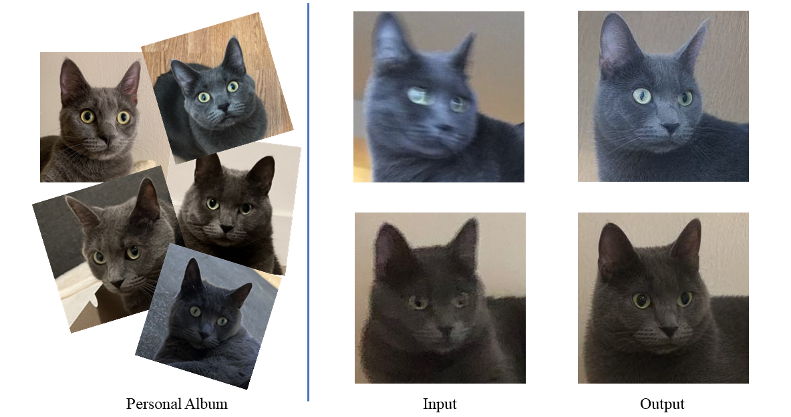

We propose a method to directly apply a pre-trained diffusion model to blind image restoration. We achieve so by constraining the generative space using a set of anchor images.
Abstract
The inherent generative power of denoising diffusion models makes them well-suited for image restoration tasks where the objective is to find the optimal high-quality image within the generative space that closely resembles the input image.
We propose a method to adapt a pretrained diffusion model for image restoration by simply adding noise to the input image to be restored and then denoise. Our method is based on the observation that the space of a generative model needs to be constrained. We impose this constraint by finetuning the generative model with a set of anchor images that capture the characteristics of the input image. With the constrained space, we can then leverage the sampling strategy used for generation to do image restoration. We evaluate against previous methods and show superior performances on multiple real-world restoration datasets in preserving identity and image quality.
We also demonstrate an important and practical application on personalized restoration, where we use a personal album as the anchor images to constrain the generative space. This approach allows us to produce results that accurately preserve high-frequency details, which previous works are unable to do.
Single-Image Restoration
Personalized Restoration


Interactive Comparison
We can slide the images to see the differences between the input (right) and the output (left) more clearly. The first row are single-image restoration results while the second row are personalized restoration results.
BibTeX
@article{ding2023restoration,
title={Restoration by Generation with Constrained Priors},
author={Ding, Zheng and Xuaner Zhang and Tu, Zhuowen and Xia, Zhihao},
journal={arXiv}
year={2023}
}